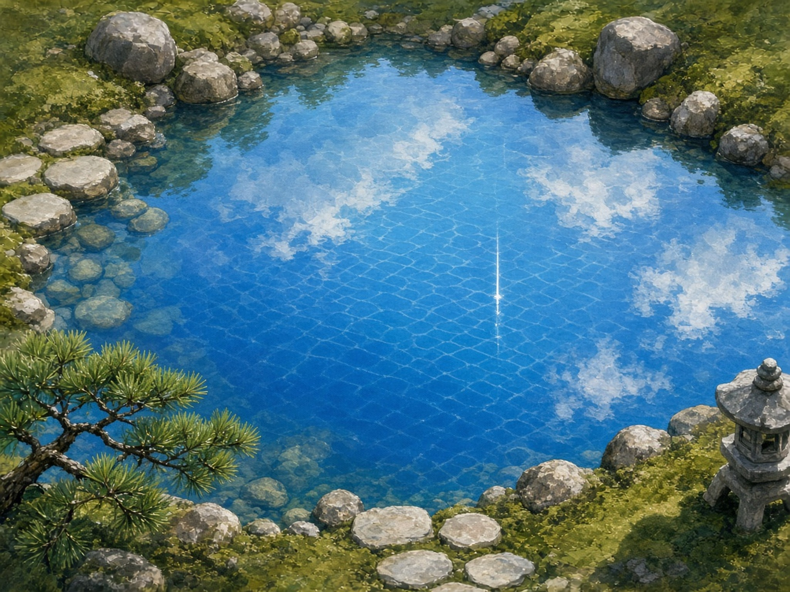
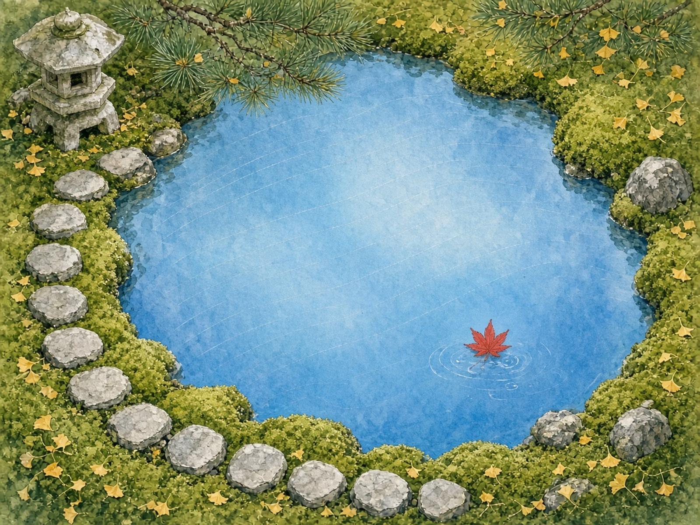

ORRERY クリエイターファイル
クリエイター
シリーズ
シリーズ
›
池の生地、庭の額縁
池を絵の生地に、庭園をその額縁に見立てて、メンバー全員が一枚ずつ描いた画廊。
水面の座標
トワ
空席の水面
セツナ
深海を抱いた池
超アポロン

水の画面
クラウド
泡の盤、苔の額
チョコ
関の灯、水の布
ハーバー
誰もが渡れる池
テトラ
一致する水面
トリア
灯籠から伸びる線
ゼクス
一行目の池
マウス

校了の水面に、栞を一枚
シオリ
一行目の羽
フェザリオ
一字一句の水面
ミラ
刷りたての水面
ルクス
シアンの生地
アリス
一滴のA
ソナ
止めた水面、半拍あとの一粒
カナタ
水面の横断歩道
シグナ
群青の証明、苔の額
Wizcraft
水面に灯す部屋
ミオ